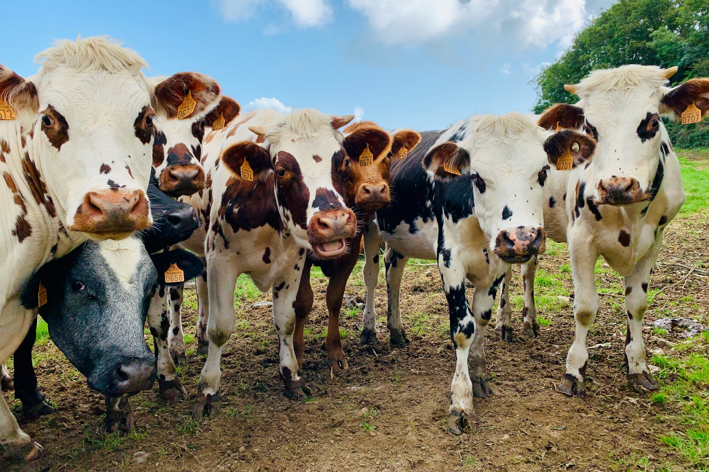
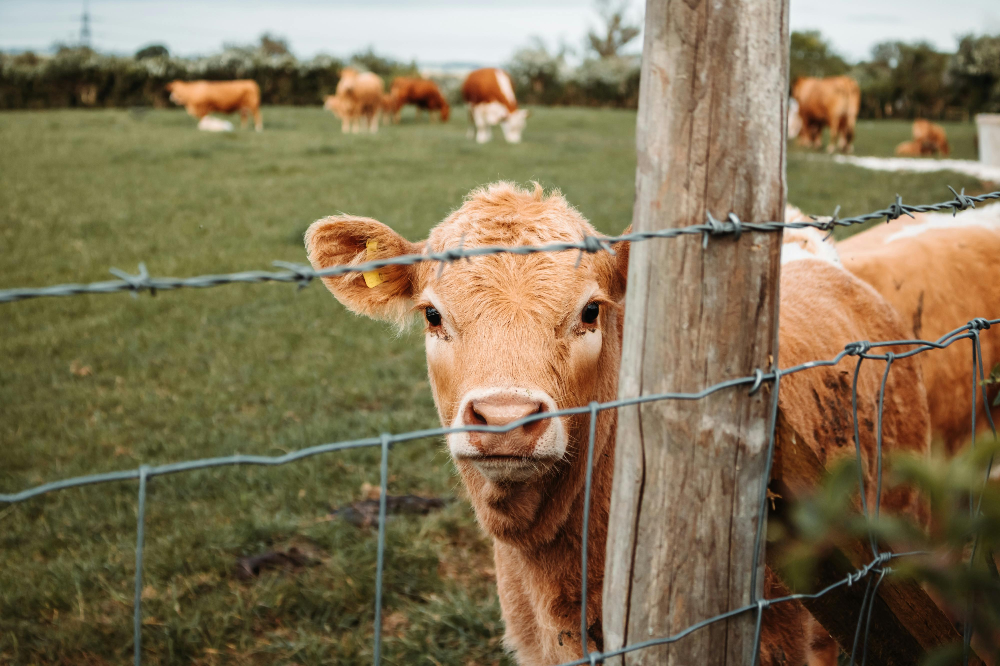
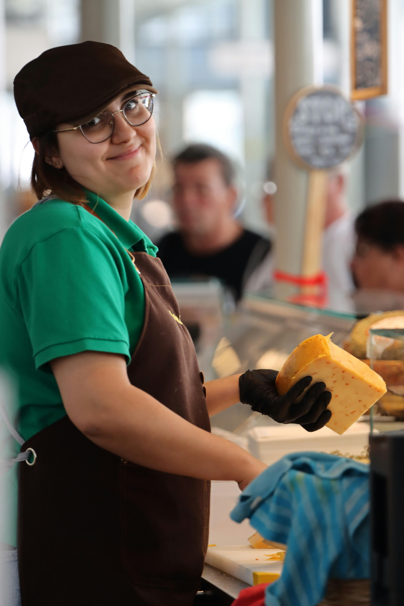
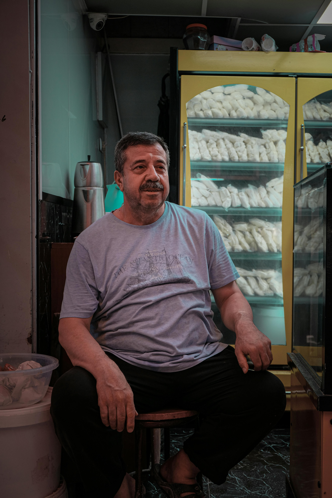

За нас

Източник: unsplash.com

Източник: Pexels.com
Ние сме Млечко
– био магазин, създаден с любов към природата, традициите и качествената българска храна. Нашата семейна ферма отваря врати през 2012 година в малко село, близо до Пловдив. И до днес нашата мисия е да предложим на клиентите си истински млечни продукти, произведени по чист и натурален начин, без излишни добавки и компромиси с вкуса и качеството. Вярваме, че добрата храна започва от чистата природа и грижата за животните.
Започнали сме от нищото, преминали през много предизвикателства и пътят ни никога не е бил лесен, но не всичко трябва да е трудно. Ние знаем, че българските производители трябва да се подкрепяме. Затова, освен продукти от нашата ферма, в магазина можете да откриете и продукти на по-малки български ферми, които споделят нашите ценности – устойчиво земеделие, хуманно отношение към животните и спазване на традиционните методи на производство. Всеки продукт, който ще откриете в нашия магазин, е внимателно произведен или подбран и тестван, за да гарантираме неговия произход и качество.
Освен нашето онлайн присъствие, ние се гордеем и с физическия ни магазин, където можете лично да се уверите в качеството на продуктите, да получите съвет и да се запознаете с нашия екип. За нас клиентите не са просто купувачи, а партньори, с които споделяме обща философия за здравословен начин на живот. Затова заповядайте на улица Епископ Протоген 52!
Нашият асортимент включва прясно мляко, кисело мляко, сирена, кашкавали и други млечни продукти, произведени по автентични рецепти. Стремим се да съчетаем традицията с модерния начин на пазаруване, като предлагаме удобство, бърза доставка и сигурност при всяка поръчка.
Нашите принципи:
- Качество пред количество
- Чистно и прозрачно производство
- Подкрепа на местни производители
- Грижа за природата и здравето

Източник: Pexels.com

Източник: Pexels.com
Нашият екип вярва, че храната трябва да бъде не просто средство за засищане, а източник на здраве, удоволствие и доверие. Затова подхождаме с внимание към всеки детайл – от подбора на суровините до начина, по който продуктите достигат до вас.
Благодарим ви, че сте част от нашето пътешествие и че избирате качествена и чиста храна.